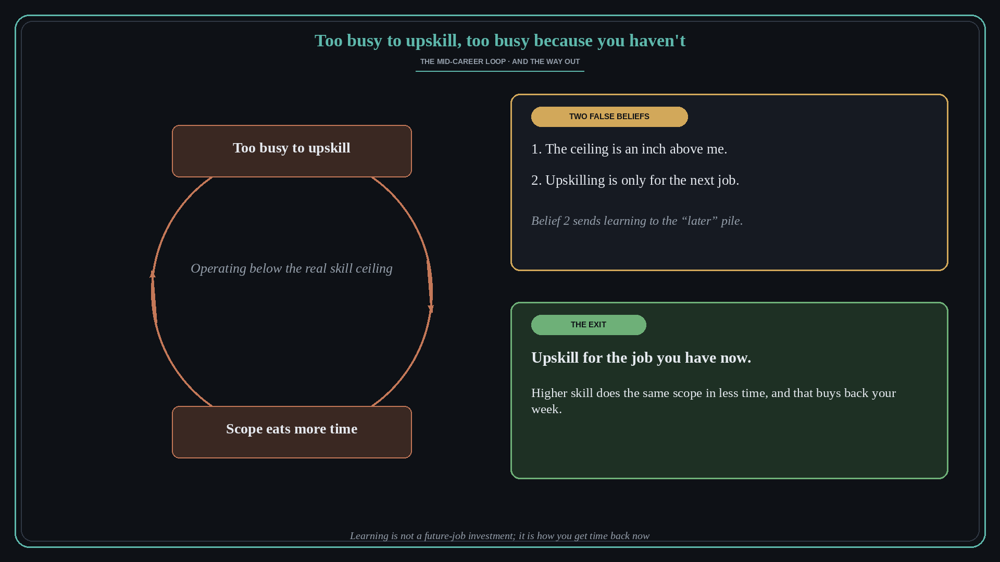

Too busy to upskill, too busy because you haven't
Source: Shreyas Doshi (@shreyas)
original post
What it claims
Mid-career product people who are doing reasonably well make two quiet assumptions: that the ceiling of key product skills is only an inch above where they are now, and that the point of upskilling is a future job or promotion. Both are false. The second does the most damage, because it sends learning to the “later” pile. Success brought more scope, and operating well below the real skill ceiling makes that scope eat far more time than it needs to. The result is a loop: too busy to upskill, and too busy because they have not upskilled.
Why it matters for a PO
A PO with a growing portfolio usually responds by working longer, not by getting better at the work. Shreyas reframes learning as the way to buy back time in the job you have today, not as career insurance. Better prioritization, sharper writing, and cleaner stakeholder handling shrink the hours the same scope costs.
3 takeaways
- Assume the skill ceiling is far above you; “I am basically there” is the trap.
- Upskill for the current job; the payoff is time and calm now, not just a future title.
- If you are too busy to learn, that is the strongest signal that you need to.
Practice this week
List the three activities that ate most of your hours last week. For one of them, pick a specific skill that would make it take half the time, and spend 30 minutes this week deliberately practicing it.